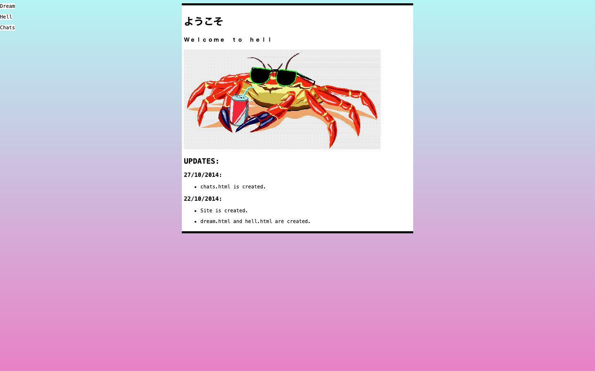

References / Website / 372
vaporwave.neocities.org
A small 2014 personal page: a white column on a cyan-to-pink gradient, a katakana greeting, spaced lowercase, and a clip-art crab with sunglasses and a soda.
- Source
- vaporwave.neocities.org
- Style
- Vaporwave (agent-proposed, not yet reviewed by a person)
- Moods
- Deadpan, kitsch, nostalgic
- Evidence
- Captured with
tools/capture.mjs(headless Chrome, 1440 × 900) on 28 September 2026 and inspected. The screenshot shows the first viewport; the measurement covers up to four screens. The update log on the page dates it to October 2014. - Reviewed
- Rights
- Third-party work, stored with credit for commentary. License: unverified. Rights policy
Observed
- The page background is a vertical gradient from pale cyan at the top to pink at the bottom.
- A white column with thick black top and bottom rules holds the heading ようこそ, the spaced subtitle “W e l c o m e t o h e l l”, and a monospace update log dated October 2014.
- A clip-art illustration shows a red crab in black sunglasses holding a soda can with a straw.
- Three small monospace links (Dream, Hell, Chats) sit at the top left.
Why it belongs
Gradient share measures 0.42. The spaced subtitle is typed with spaces between letters, so heading tracking measures 0.
Measured
Machine-extracted by tools/extract-traits.js on . Full measurement.
- Type families
- monospace (100%)
- Type scale ratio
- 1.29
- Median radius
- 0 px
- Mean chroma
- 0.12
- Palette
- #ffffff 45%
- #b5f4f4 19%
- #e881c6 19%
- #000000 18%

